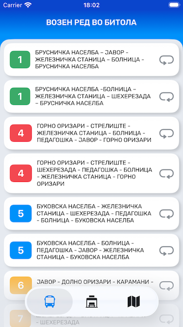
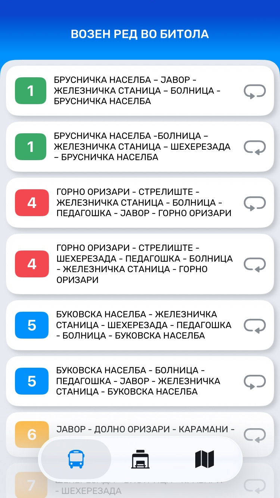
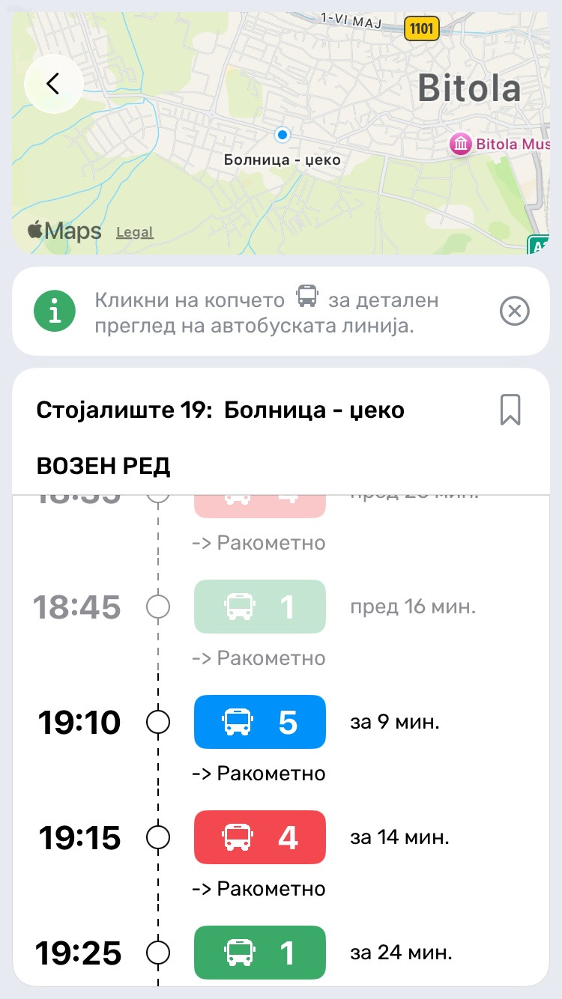
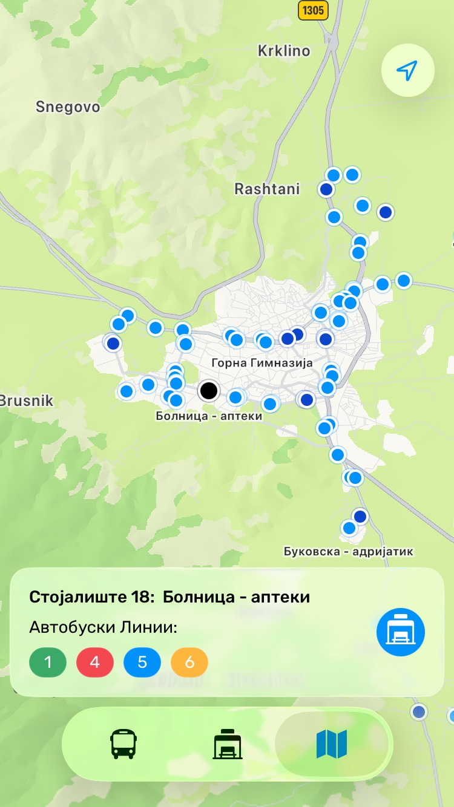
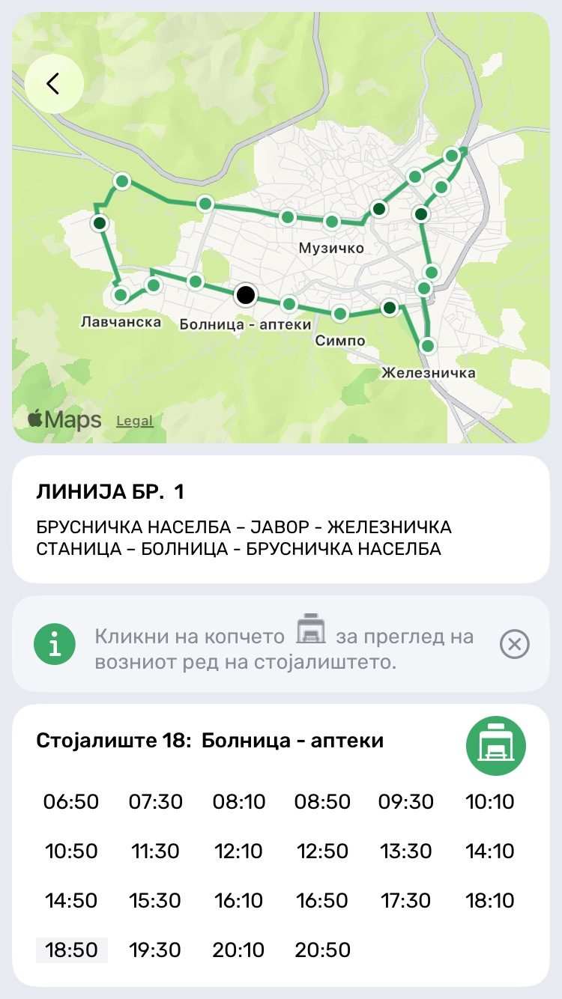
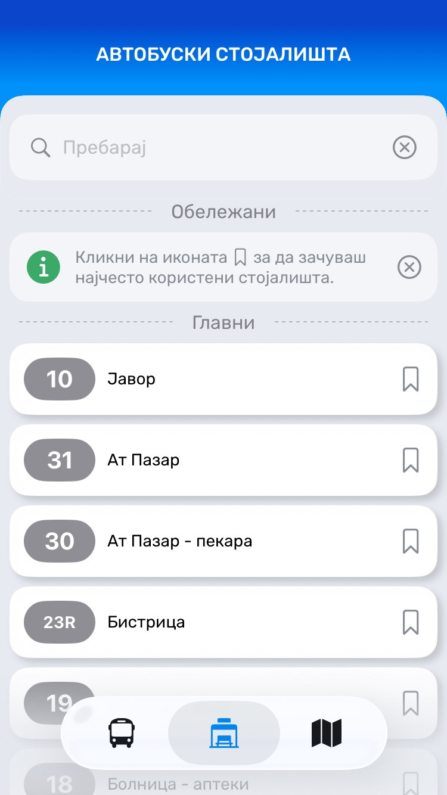
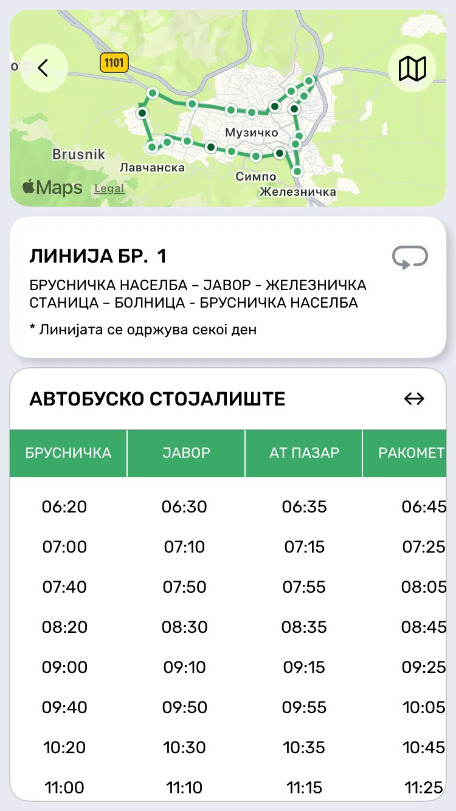

Градски Автобуски Превоз во Битола - проверете кога доаѓа вашиот автобус, погледнете ја мапата и движете се низ Битола полесно.

Ви здодеа бесконечното чекање на постојките? Кажете им збогум на неизвесноста и доцнењето. BitBus е вашиот водич низ низ битолскиот сообраќај, создаден да го направи секое патување едноставно и предвидливо. Без разлика дали брзате на работа, на предавања или едноставно ја истражувате Битола, целиот возен ред сега е во вашите раце.
Најважните податоци, како времето на пристигнување и локациите на постојките, се секогаш во преден план. Помалку време во гледање во екранот, повеќе време во движење.
Пронајдете ги најблиските постојки. Со само еден клик на која било постојка, дознајте точно уште колку минути преостануваат до пристигнувањето на следниот автобус.
Пристапете до деталните возни редови за секоја автобуска линија во Битола и организирајте го вашето време со целосна самодоверба.
Брзо пронајдете ги локациите на автобуските постојки и дознајте кои линии поминуваат низ нив, осигурувајќи се дека секогаш ја избирате најефикасната рута.
BitBus нуди чист и интуитивен изглед кој ги отстранува сите пречки, овозможувајќи ви да ја најдете вашата линија или постојка со само неколку допири на екранот.
BitBus е тука за секого. Имате комплетен пристап до сите информации за вашиот автобус во секое време, без потреба од регистрација или плаќање.





